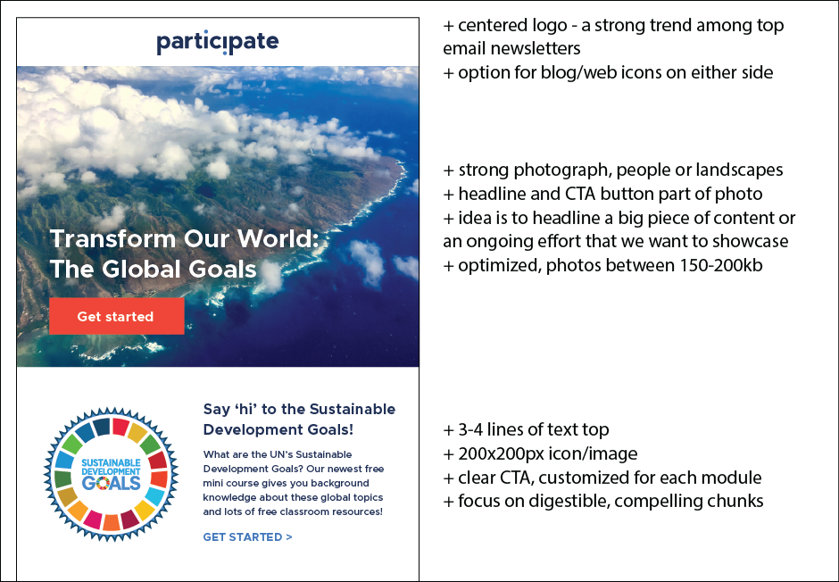

Email marketing design
HTML5, CSS, Responsive design

I have worked closely with Participate's marketing team as a design point person for my entire time at the company. This role involved creating email templates, testing layouts, adjusting table cells and tweaking designs to achieve new effects.

Left: A standard template. I designed an angled header image to prompt movement down through the email.
Right: The company Holiday email design
A seat at the table
My responsibilities grew as roles changed and old designs became outdated. When the company rebranded, I had the experience to create a new design for our weekly newsletter. This process began with ideation and mockups, which I pitched to a marketing team for review.
With my first stab at the newsletter's new template, I began learning to balance the ease of creating a mockup with the considerations of a coded design that performs well
After testing a two-column model, I decided to streamline the design into a single-column layout that would scale across any device without the use of media queries.
Removing the two-column modules created a vertical flow that was designed to scale better on varying screen sizes
The world is mobile
I began a research campaign with the company's SEO manager to A/B test elements of the newsletter and gauge how adjustments performed against a control group.
This opportunity allowed me to refine my design and implement responsive design techniques. I built a more robust template that performed even better across all kinds of devices.

The new design separated images and CTAs, preserving HTML content in case images broke or didn't load. Repeatable, responsive blocks could mix text and graphics interchangeably
I built emails with this new template for months, allowing the marketing team to deliver updates, announcements and free content to our user base.

Emails with downloadable content performed well. I designed these poster infographics for the company's Sustainable Development Goals series.
Results
I set up variations of the new template for use by other departments in the company. I built a set of three templates along with documentation so that departments can send anything from basic announcements to newsletters of their own.
Working with email marketing gave me experience in fast-paced development with a focus on performance among users. I have used what I learned in responsive design to inform my development work in other areas.